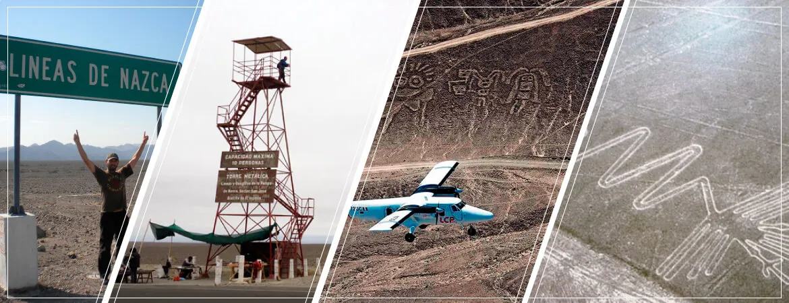
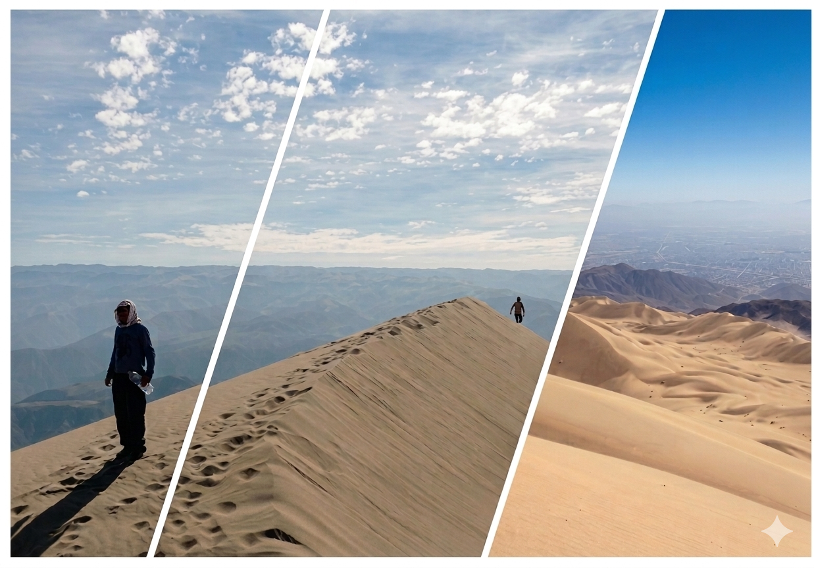
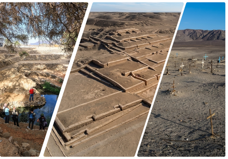
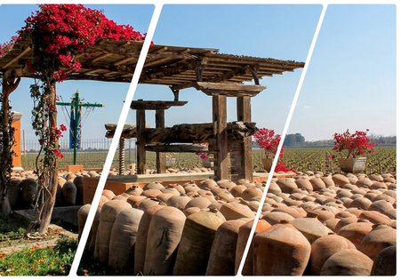
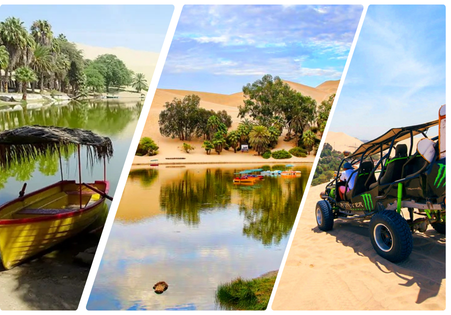
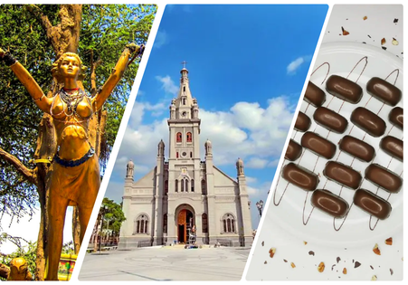
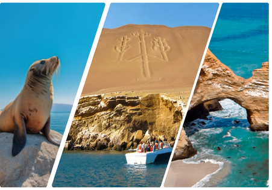
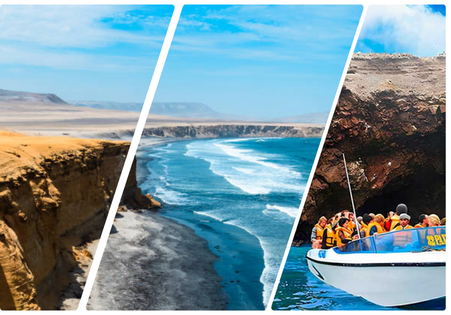
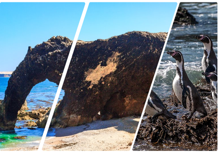

Vive la historia, siente la adrenalina
Nuestros Paquetes Turísticos

No es solo un vuelo, es un viaje en el tiempo. Sobrevuela las Enigmáticas Líneas y Geoglifos de Nasca y descubre desde el cielo los trazos que han desafiado a la historia por siglos. Desde el Colibrí hasta el Mono, contempla cada figura con una claridad privilegiada en una experiencia diseñada para dejarte sin aliento.

- Ingeniería viva: Camina junto a canales en espiral que aún hacen florecer el desierto.
- Choque de imperios: Explora de cerca la imponente arquitectura de piedra inca y nasca.
- Misterio a tu alcance: Observa un auténtico geoglifo desde un mirador natural.

- Rostros del desierto: Asómbrate con las momias originales y sus largas cabelleras intactas en sus tumbas milenarias.
- Colores que perduran: Aprende el proceso ancestral de tejido y teñido natural utilizando técnicas preincas.
- Arte en tus manos: Observa a los maestros artesanos moldear y pintar la famosa cerámica policromada de Nasca.

- Perspectiva única: Contempla las impresionantes figuras del árbol, las manos y el lagarto desde el mirador principal.
- Viaje en el tiempo: Explora los mapas, herramientas y bocetos originales en la Casa Museo.
- Aventura terrestre: La opción perfecta para admirar la grandeza de los trazos sin necesidad de volar.

- Adrenalina pura: Atraviesa el desierto en buggies y domina las impresionantes dunas de Usaka con tu tabla de sandboard.
- Ecos del pasado: Explora el inmenso centro ceremonial de Cahuachi y camina por el misterioso cementerio profanado.
- Naturaleza y tradición: Admira un huarango centenario, los acueductos de Ocongalla y el arte vivo en los talleres locales.

- Trekking de aventura: Asciende paso a paso hasta la cima del gigante de arena.
- Descenso extremo: Deslízate cientos de metros sobre tu tabla de sandboard.
- Vista panorámica: Contempla todo el valle de Nasca desde lo más alto.

- Aventura e historia: Recorre el desierto en buggies hasta llegar a los acueductos de Ocongalla.
- Misterio antiguo: Camina entre las enormes pirámides de Cahuachi y el cementerio de Usaka.
- Tradición viva: Descubre los secretos de la cerámica policromada y los textiles en talleres tradicionales.

- Contraste perfecto: Explora las diferencias entre una gran bodega industrial y una tradicional artesanal.
- Cata exclusiva: Degusta la mejor selección de vinos, piscos y suaves cremas de pisco.
- Tradición viva: Relájate y brinda mientras conoces la auténtica cultura vitivinícola de la región.

- Aventura en las dunas: Vive una experiencia llena de adrenalina recorriendo el desierto de Huacachina en buggies areneros y deslízate por las impresionantes dunas practicando sandboarding.

Historia y tradición: Recorre los lugares más representativos de Ica, desde el mágico oasis de Huacachina hasta el místico pueblo de Cachiche, conocido por sus leyendas y tradiciones.

Naturaleza y vida marina: Navega por la bahía de Paracas y descubre las Islas Ballestas, hogar de lobos marinos, pingüinos de Humboldt y diversas aves guaneras en su hábitat natural.

Paisajes del desierto y el mar: Explora la impresionante Reserva Nacional de Paracas, donde el desierto se encuentra con el océano y podrás visitar hermosas playas rodeadas de paisajes naturales únicos.

Naturaleza salvaje: Explora la impresionante zona de San Fernando y la playa de Marcona, donde podrás observar lobos marinos, pingüinos y diversas aves guaneras en un entorno natural único.